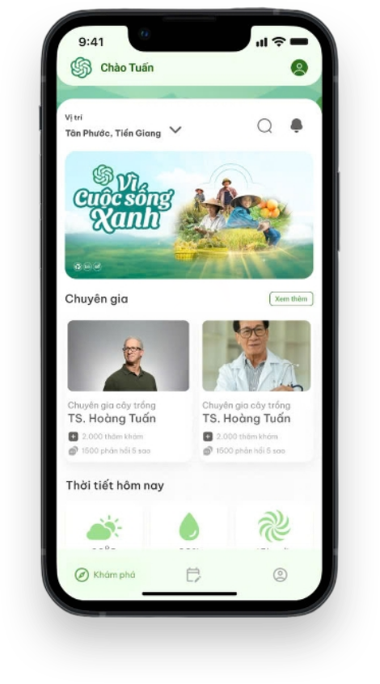
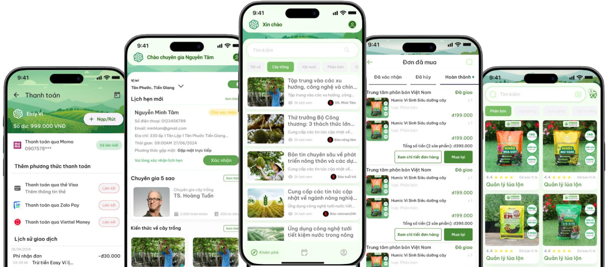

Easy Farmer là ứng dụng hỗ trợ toàn diện cho người nông dân, tích hợp các tính năng hiện đại như cập nhật tin tức nông nghiệp, dự báo thời tiết theo khu vực, nhận diện bệnh cây trồng bằng AI và kết nối với chuyên gia phù hợp để tư vấn và đặt lịch khám với chi phí hợp lý. Ứng dụng còn tổ chức các buổi hội thảo chia sẻ kinh nghiệm, tạo diễn đàn cộng đồng để nông dân giao lưu, và tích hợp sàn thương mại điện tử cung cấp nông sản chất lượng, phân bón và thuốc bảo vệ thực vật có nguồn gốc rõ ràng. Easy Farmer hướng đến mục tiêu nâng cao hiệu quả canh tác, kết nối cộng đồng và thúc đẩy nền nông nghiệp bền vững, hiện đại.
- Cập nhật liên tục bản tin nông nghiệp về thị trường, cây trồng và dịch bệnh
- Tổ chức hội thảo chuyên sâu theo từng khu vực
- Xây dựng diễn đàn để nông dân trao đổi kinh nghiệm
- Tích hợp thông tin thời tiết chính xác theo khu vực
- Hỗ trợ nông dân lập kế hoạch canh tác hiệu quả
- Tích hợp AI hiện đại để chẩn đoán bệnh cây trồng qua hình ảnh
- Người dùng chỉ cần chụp hoặc tải ảnh cây bị bệnh
- Hệ thống tự động phân tích, nhận diện dấu hiệu bất thường
- Đề xuất phương án xử lý tạm thời nhanh chóng
- Gợi ý kết nối với chuyên gia gần nhất để tư vấn và hỗ trợ kịp thời
- Giúp tiết kiệm thời gian và nâng cao hiệu quả chăm sóc cây trồng
- Hỗ trợ tiêu diệt sâu bệnh nhanh chóng và an toàn
- Cung cấp giải pháp phòng trừ hiệu quả theo từng loại bệnh
- Đề xuất sản phẩm thuốc bảo vệ thực vật đã được kiểm định
- Đảm bảo nguồn gốc xuất xứ rõ ràng, an toàn cho cây và môi trường
- Giúp kiểm soát dịch hại kịp thời, bảo vệ mùa màng và tăng năng suất
- Sản phẩm có giấy tờ minh bạch, nguồn gốc rõ ràng
- Được kiểm định chất lượng chặt chẽ trước khi phân phối
- Bao gồm: thuốc bảo vệ thực vật, phân bón, nông sản,...
- Đáp ứng tiêu chuẩn nông nghiệp sạch, an toàn và hiệu quả
- Giúp nông dân yên tâm sử dụng, người tiêu dùng tin tưởng lựa chọn
- Giao diện thân thiện, đơn giản và trực quan
- Phù hợp với mọi đối tượng, kể cả người ít rành công nghệ
- Chức năng sắp xếp rõ ràng, dễ thao tác
- Hướng dẫn chi tiết bằng tiếng Việt
- Dễ dàng tra cứu thông tin, chẩn đoán bệnh, đặt lịch tư vấn và mua sắm
- Giúp người dùng sử dụng thuận tiện và hiệu quả trong mọi hoàn cảnh
- Hỗ trợ kỹ thuật và kết nối chuyên gia nông nghiệp
- Cung cấp nhiều ưu đãi hấp dẫn dành cho nông dân
- Giảm giá khi mua phân bón, thuốc bảo vệ thực vật
- Ưu đãi vận chuyển nông sản, tặng quà theo mùa vụ
- Khuyến mãi cập nhật thường xuyên, tiết kiệm chi phí
- Giúp nông dân dễ dàng tiếp cận sản phẩm chất lượng với giá hợp lý

Easy Farmer đã vượt qua rất nhiều ý tưởng khác để lọt vào vòng bán kết – đánh dấu cột mốc đầu tiên trên hành trình hiện thực hóa dự án.

Nhóm đã có cơ hội trao đổi trực tiếp với lãnh đạo doanh nghiệp, nhận được những góp ý quý giá để hoàn thiện sản phẩm và mô hình vận hành.

Easy Farmer vinh dự nhận giải quán quân với phần thưởng 3 triệu đồng – không chỉ là động lực, mà còn là sự công nhận cho ý tưởng sáng tạo và khả năng thực thi.

Chị Ngô Thùy Phương Thanh – Trưởng ban truyền thông và marketing – đánh giá cao ý nghĩa xã hội và tiềm năng phát triển bền vững của Easy Farmer.

Đăng ký thành viên miễn phí để cập nhật tin tức nông nghiệp, chia sẻ kinh nghiệm
cùng cộng đồng và sử dụng các tính năng cơ bản, sử dụng AI nhận diện bệnh nâng cao, đặt lịch tư vấn
trực tiếp. Với gói thành viên trả phí, bạn sẽ
được gói chăm sóc
và tư vấn của chuyên gia hàng tháng, đặc biệt hơn bạn sẽ nhận được các ưu đãi độc quyền trên sàn
thương mại điện tử
👉 Hãy lựa chọn gói phù hợp và đồng hành cùng Easy Farmer trên hành trình làm nông thông minh, hiệu
quả hơn mỗi ngày!
0 đ
Tháng
120.000 đ
Tháng
Hãy bắt đầu hành trình làm nông hiện đại, thông minh và hiệu quả hơn cùng Easy Farmer – ứng dụng
được thiết kế dành riêng cho người nông dân Việt Nam. Với giao diện thân thiện, dễ sử dụng và tích
hợp hàng loạt tính năng ưu việt như nhận diện bệnh cây bằng AI, cập nhật bản tin nông nghiệp, kết
nối chuyên gia, dự báo thời tiết chính xác, cùng với sàn thương mại điện tử cung cấp sản phẩm uy
tín, Easy Farmer mang đến một hệ sinh thái nông nghiệp toàn diện ngay trong tầm tay bạn.
Không chỉ vậy, người dùng còn được hưởng hàng loạt ưu đãi hấp dẫn, tiết kiệm chi phí và gia tăng
hiệu quả sản xuất. Đây chính là công cụ cần thiết để bạn theo kịp xu hướng nông nghiệp số và phát
triển bền vững.